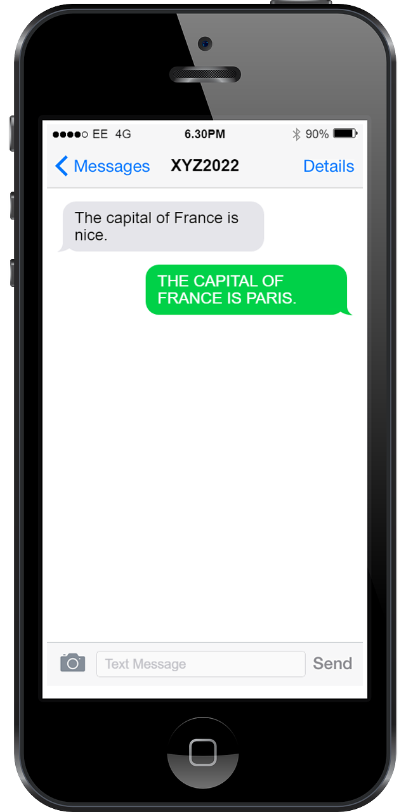

Today on this way · 10 NOV 2026 · Today's story
Safety experts say companion apps need better guardrails than they have
Safety experts on Replika and isolation, where the concern is not the chatbot but what replaces it. The object is the companion and the risk is the substitution.
Read the case